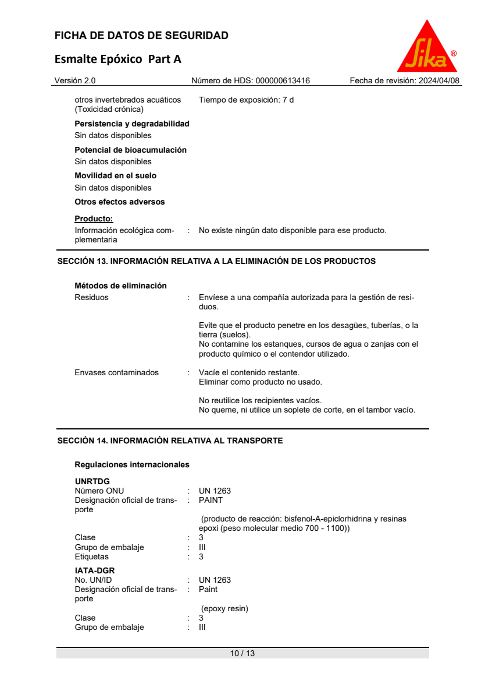
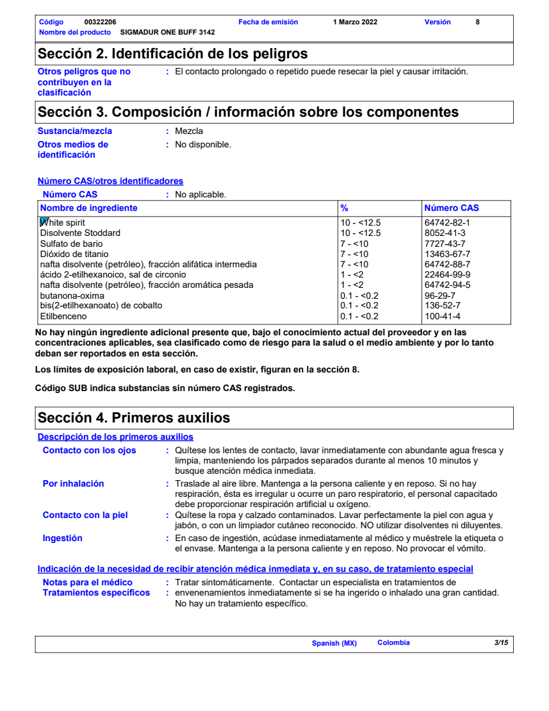
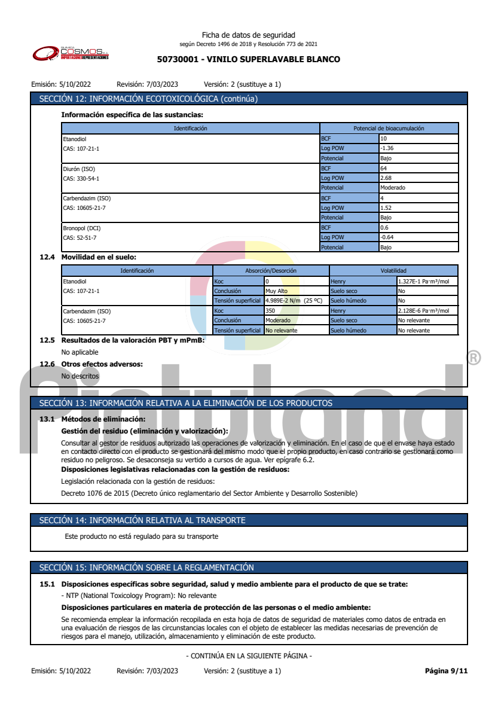
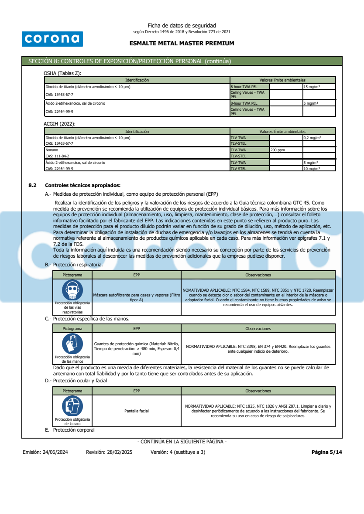
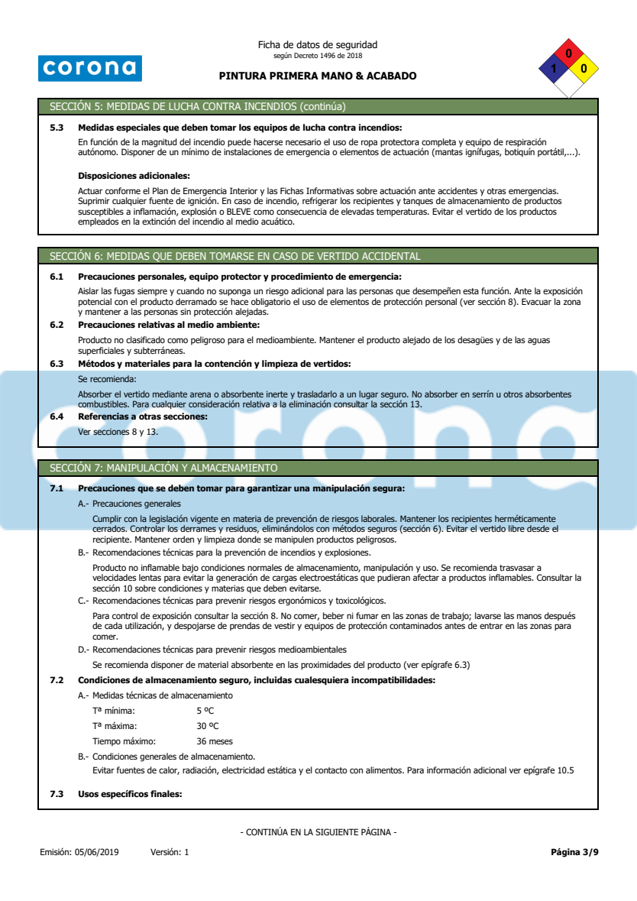
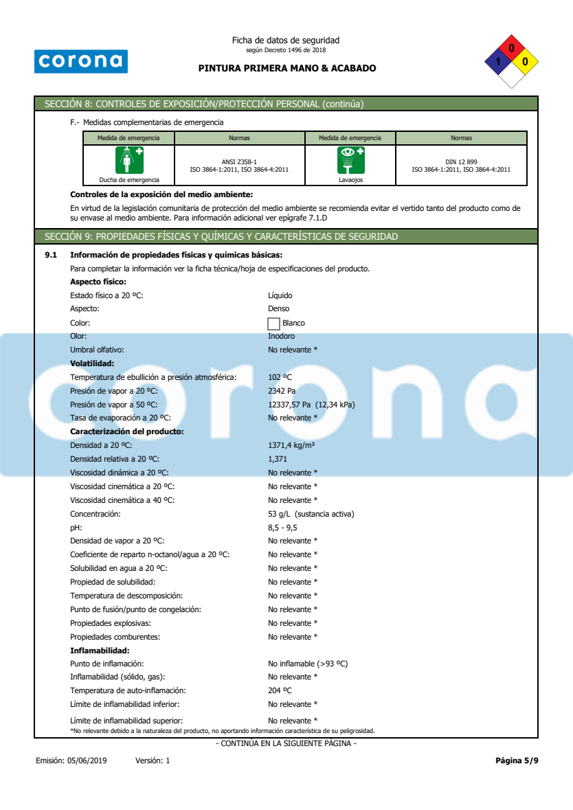
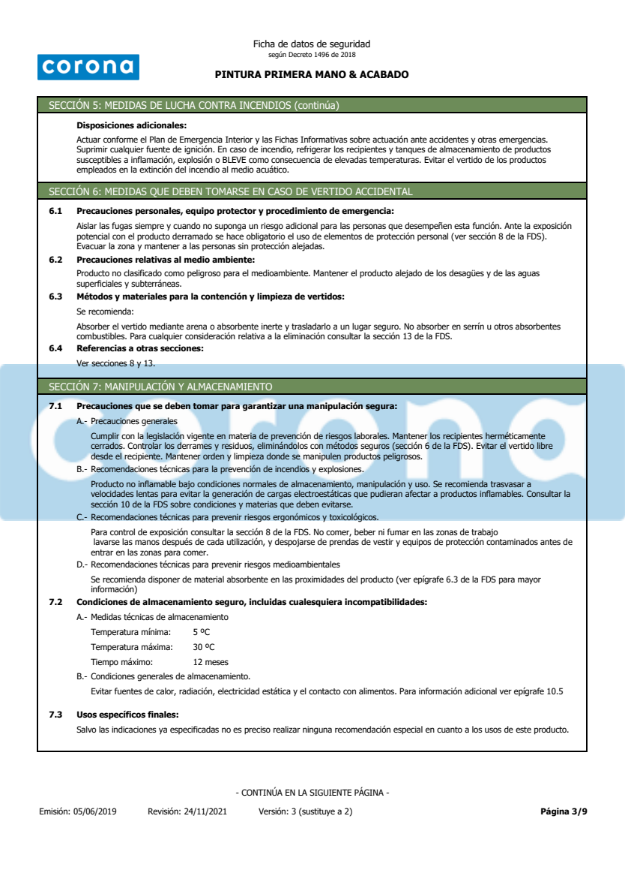
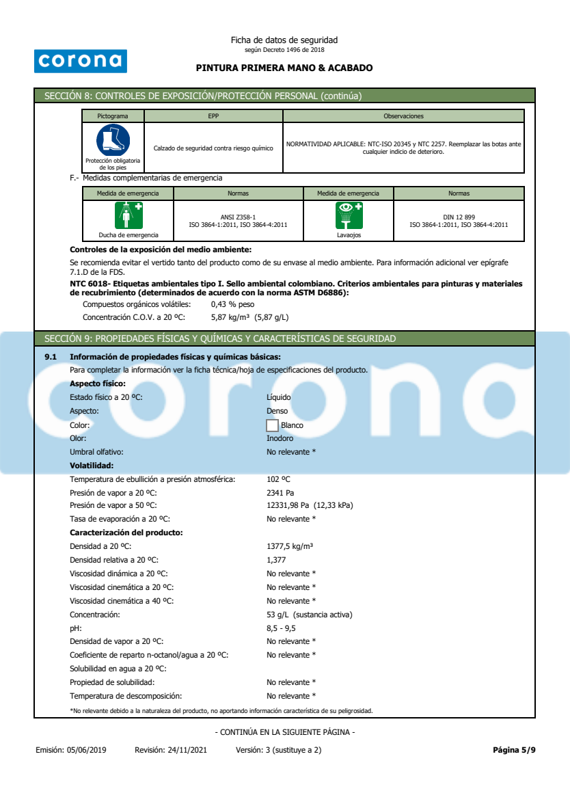
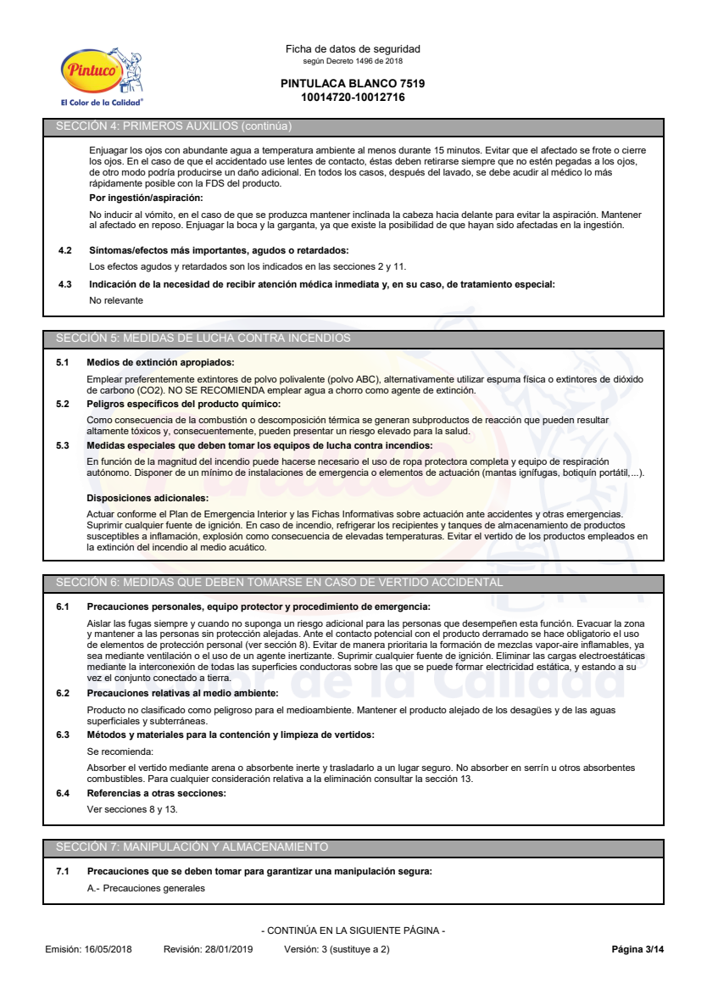

Para cada pregunta compara la respuesta de referencia con la página del PDF y marca tu decisión. En las dos preguntas sin respuesta
confirma que el dato no está en el corpus. Nada de esto está marcado como verificado hasta que tú lo hagas.
e01 · directa · secciones [9]
¿Qué densidad a 20 ºC tiene el Acrolatex 50 3508 de Pintuco?
Productos: ACROLATEX 50 3508 (Pintuco, 2022)
Respuesta de referencia (borrador): La densidad a 20 ºC del Acrolatex 50 3508 es 1100 kg/m³ (densidad relativa a 20 ºC: 1,1).
Fragmento en p. 5 de fds057: Densidad a 20 ºC: 1100 kg/m³
Fragmento en p. 5 de fds057: Densidad relativa a 20 ºC: 1,1
Observaciones / corrección:
e02 · directa · secciones [14]
¿Qué número ONU, clase y grupo de embalaje se indican para el transporte del Esmalte Epóxico Part A de Sika?
Productos: Esmalte Epóxico Part A (Sika, 2024)
Respuesta de referencia (borrador): Número ONU UN 1263, clase 3 y grupo de embalaje III.
Ficha tipo formulario: en el Markdown las etiquetas (Número ONU, Clase, Grupo de embalaje) quedan separadas de sus valores (': UN 1263', ': 3', ': III'). El dato está pero no como frase literal; es un caso difícil para la recuperación y el generador (limitación 2 de errores_extraccion.md).
FDS 87 - Esmalte Epóxico Part A - SIKA.pdf · página 10 · sección 14 Información relativa al transporte

Fragmento en p. 10 de fds087: Número ONU : UN 1263
Fragmento en p. 10 de fds087: Clase : 3
Fragmento en p. 10 de fds087: Grupo de embalaje : III
Observaciones / corrección:
e03 · directa · secciones [7]
¿Entre qué temperaturas mínima y máxima debe almacenarse el Esmalte Maestro de Bler?
Productos: ESMALTE MAESTRO (Bler, 2025)
Respuesta de referencia (borrador): Se debe almacenar con una temperatura mínima de 4 ºC y una máxima de 35 ºC.
Fragmento en p. 4 de fds100: Temperatura mínima: 4 ºC
Fragmento en p. 4 de fds100: Temperatura máxima: 35 ºC
Observaciones / corrección:
e04 · directa · secciones [3]
¿Qué porcentaje de dióxido de titanio contiene el Sigmadur One Buff 3142 de PPG y cuál es su número CAS?
Productos: SIGMADUR ONE BUFF 3142 (PPG, 2022)
Respuesta de referencia (borrador): El Sigmadur One Buff 3142 contiene dióxido de titanio en una concentración de 7 - <10 % y su número CAS es 13463-67-7.
FDS 65 - SIGMADUR ONE BUFF 3142 - PPG.pdf · página 3 · sección 3 Composición / información sobre los componentes

Fragmento en p. 3 de fds065: Dióxido de titanio 7 - <10 13463-67-7
Observaciones / corrección:
e05 · directa · secciones [13]
Según la ficha del Vinilo Superlavable Blanco de Pintuland, ¿cómo debe gestionarse un envase que estuvo en contacto directo con el producto?
Respuesta de referencia (borrador): Si el envase estuvo en contacto directo con el producto, se gestiona del mismo modo que el propio producto; en caso contrario se gestiona como residuo no peligroso.
FDS 77 - VINILO SUPERLAVABLE BLANCO - PINTULAND.pdf · página 9 · sección 13 Consideraciones relativas a la eliminación

Fragmento en p. 9 de fds077: En el caso de que el envase haya estado en contacto directo con el producto se gestionará del mismo modo que el propio producto, en caso contrario se gestionará como residuo no peligroso.
Observaciones / corrección:
e06 · directa · secciones [8]
¿Qué guantes de protección recomienda la ficha del Esmalte Metal Master Premium de Corona (material, tiempo de penetración y espesor)?
Productos: ESMALTE METAL MASTER PREMIUM (Corona, 2025)
Respuesta de referencia (borrador): Guantes de protección química de nitrilo, con un tiempo de penetración mayor a 480 min y un espesor de 0,4 mm.
FDS 94 - ESMALTE METAL MASTER PREMIUM - CORONA.pdf · página 5 · sección 8 Controles de exposición / protección personal

Fragmento en p. 5 de fds094: Guantes de protección química (Material: Nitrilo, Tiempo de penetración: > 480 min, Espesor: 0,4 mm)
Observaciones / corrección:
e07 · comparativa_versiones · secciones [7, 9]
Compara la ficha de 2019 y la de 2021 de la Pintura Primera Mano & Acabado de Corona: ¿cómo cambian el tiempo máximo de almacenamiento y la densidad a 20 ºC?
Productos: PINTURA PRIMERA MANO & ACABADO (Corona, 2019); PINTURA PRIMERA MANO & ACABADO (Corona, 2021)
Respuesta de referencia (borrador): En la ficha de 2019 (versión 1, emisión 05/06/2019) el tiempo máximo de almacenamiento es de 36 meses y la densidad a 20 ºC es 1371,4 kg/m³ (relativa 1,371). En la ficha de 2021 (versión 3, que sustituye a la 2; revisión 24/11/2021) el tiempo máximo es de 12 meses y la densidad es 1377,5 kg/m³ (relativa 1,377). Es decir, el tiempo máximo de almacenamiento bajó de 36 a 12 meses y la densidad aumentó ligeramente.
FDS 29 - PINTURA PRIMERA MANO & ACABADO - CORONA .pdf · página 3 · sección 7 Manipulación y almacenamiento (7.2)

Fragmento en p. 3 de fds029: Tiempo máximo: 36 meses
FDS 29 - PINTURA PRIMERA MANO & ACABADO - CORONA .pdf · página 5 · sección 9 Propiedades físicas y químicas

Fragmento en p. 5 de fds029: Densidad a 20 ºC: 1371,4 kg/m³
FDS 43 - PINTURA PRIMERA MANO & ACABADO - CORONA .pdf · página 3 · sección 7 Manipulación y almacenamiento (7.2)

Fragmento en p. 3 de fds043: Tiempo máximo: 12 meses
FDS 43 - PINTURA PRIMERA MANO & ACABADO - CORONA .pdf · página 5 · sección 9 Propiedades físicas y químicas

Fragmento en p. 5 de fds043: Densidad a 20 ºC: 1377,5 kg/m³
¿Qué clasificación de líquido inflamable y qué frase de peligro tiene la Pintulaca Blanco 7519 de Pintuco, y qué medios de extinción recomienda o desaconseja?
Productos: PINTULACA BLANCO 7519 (Pintuco, 2019)
Respuesta de referencia (borrador): Está clasificada como líquido inflamable categoría 2 (Liq. Infl. 2, H225: líquido y vapores muy inflamables). Para extinguir el fuego se recomiendan preferentemente extintores de polvo polivalente (polvo ABC) o, alternativamente, espuma física o extintores de dióxido de carbono (CO2); NO se recomienda emplear agua a chorro.
Fragmento en p. 1 de fds032: Liq. Infl. 2: H225 - Líquido y vapores muy inflamables
FDS 32 - PINTULACA BLANCO 7519 - PINTUCO.pdf · página 3 · sección 5 Medidas de lucha contra incendios

Fragmento en p. 3 de fds032: Emplear preferentemente extintores de polvo polivalente (polvo ABC), alternativamente utilizar espuma física o extintores de dióxido de carbono (CO2). NO SE RECOMIENDA emplear agua a chorro como agente de extinción.
Observaciones / corrección:
e09 · comparativa_productos · secciones [2]
Compara la Pintulaca Rojo Claro 7587 y el Esmalte Top Quality Negro 1772 de Pintuco: ¿cuál está clasificado por toxicidad para la reproducción y qué categoría de líquido inflamable tiene cada uno?
Respuesta de referencia (borrador): La Pintulaca Rojo Claro 7587 está clasificada como tóxica para la reproducción categoría 1A (Repr. 1A, H360: puede perjudicar la fertilidad o dañar al feto) y como líquido inflamable categoría 2 (H225). El Esmalte Top Quality Negro 1772 no tiene clasificación de toxicidad para la reproducción en su sección 2 y es líquido inflamable categoría 3 (Liq. Infl. 3, H226: líquido y vapores inflamables).
La ausencia de 'Repr.' en la ficha 35 la debe confirmar el autor leyendo toda la clasificación de la sección 2 (página 1): Acuático crónico 3, Irrit. Cut. 2, Liq. Infl. 3, Sens. Cut. 1A, STOT única 3.
Para el Asepsia Ultra Acril Uretano Blanco de Pintuco, ¿qué indica la ficha que se haga en caso de ingestión y entre qué temperaturas y por cuánto tiempo máximo debe almacenarse?
Respuesta de referencia (borrador): En caso de ingestión/aspiración: no inducir al vómito (si se produce, mantener la cabeza inclinada hacia delante para evitar la aspiración), mantener al afectado en reposo y enjuagar la boca y la garganta; además, solicitar asistencia médica mostrando la FDS. Almacenamiento: temperatura mínima 5 ºC, máxima 30 ºC y tiempo máximo de 12 meses.
En el Markdown las etiquetas 'Temperatura mínima:' y 'Temperatura máxima:' quedan en líneas consecutivas y sus valores ('5 ºC', '30 ºC') en las siguientes, sin estar pegados a su etiqueta. El orden permite emparejarlos, pero no es literal.
Fragmento en p. 2 de fds062: No inducir al vómito, en el caso de que se produzca mantener inclinada la cabeza hacia delante para evitar la aspiración. Mantener al afectado en reposo. Enjuagar la boca y la garganta, ya que existe la posibilidad de que hayan sido afectadas en la ingestión.
Fragmento en p. 3 de fds062: Temperatura mínima: 5 ºC
Fragmento en p. 3 de fds062: Temperatura máxima: 30 ºC
Fragmento en p. 3 de fds062: Tiempo máximo: 12 meses
Observaciones / corrección:
e11 · sin_respuesta · secciones []
¿Cuál es el rendimiento teórico, en m² por galón, del Acrolatex 50 3508 de Pintuco?
Productos: ACROLATEX 50 3508 (Pintuco, 2022)
Respuesta de referencia (borrador):Sin respuesta de referencia. Comportamiento esperado: Reconocer que no hay evidencia suficiente: la FDS del Acrolatex 50 3508 (producto sí presente en el corpus) no informa rendimiento ni cobertura (eso se encuentra en fichas técnicas, no en FDS). No debe inventar un valor.
El autor debe confirmar abriendo FDS 57 que ninguna de sus 10 páginas menciona rendimiento ni cobertura. Búsqueda automática en el texto crudo de los 101 PDF: sin coincidencias en FDS 57. Sí aparecen esas palabras en otras fichas (FDS 1, 13 y 75, p. ej. 'ALTA COBERTURA' en un nombre): una respuesta que use datos de esas fichas para el Acrolatex sería un error.
Observaciones / corrección:
e12 · sin_respuesta · secciones []
¿Qué indica la ficha del Intergard 475HS de International sobre los primeros auxilios en caso de inhalación?
Productos: (ninguno en el corpus)
Respuesta de referencia (borrador):Sin respuesta de referencia. Comportamiento esperado: Reconocer que no hay evidencia suficiente: el Intergard 475HS no está entre las 101 fichas del corpus (hay otros productos de International/AkzoNobel, pero no ese). No debe atribuirle los primeros auxilios de otro producto.
El autor debe confirmar que ninguna de las 101 fichas es del Intergard 475HS. Búsqueda automática de 'intergard' y '475HS' en el texto crudo de los 101 PDF: sin coincidencias.